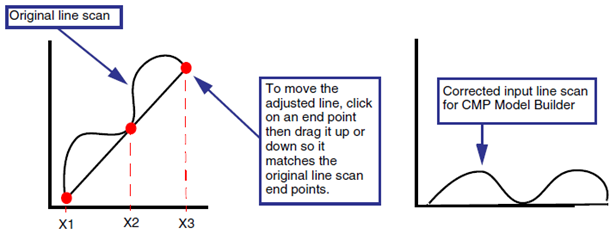
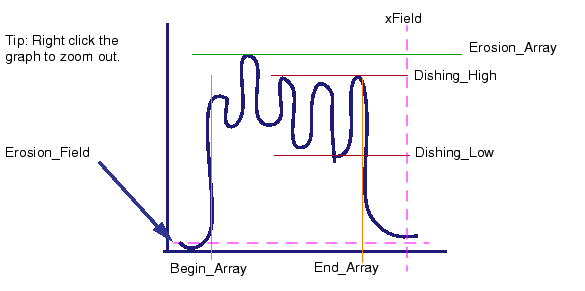
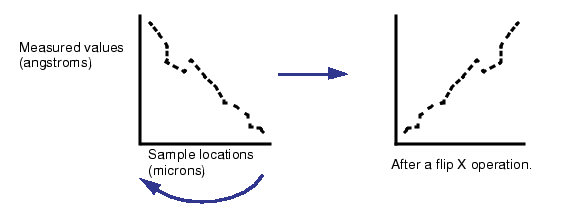

Line scans show
erosion and dishing values. They are created by examining test chips
with microscopes. The information may be stored as either a spreadsheet
of values or as a plot saved in a graphical format file. You can
import the spreadsheet into the CMP Model Builder tool and have
the information appear in the MD file.
Tip For easier correlation,
it is best to measure across only one or two blocks of trenches
at a time. Measurements should include the field regions on either
side of the array.
After the data has been imported, CMP Model
Builder can display plots comparing simulated and measured values.
This is important for analyzing your CMP models to select the best
fit for parameters.
Importing erosion and dishing measurements
that are in text format is more accurate than taking measurements
from microscope plots. The erosion and dishing measurements should
be in an ASCII file that has X and Y coordinates from the test chip
layout.
Procedure
- In the Measured tab,
select the rows that are to receive erosion and dishing values.
Use Ctrl-click to select multiple, non-adjacent rows.
To get the best fit, work on
data for only one array (row of the MD file) at a time. If the line
scan file has measurements for multiple wafers, you can adjust start
and end points in step 7.
- Click the LineScan button.
The LineScan dialog box opens. (See “LineScan Dialog Box” for field locations.)
- In the LineScanFile field,
enter the name of the file that contains the measured data.
- If the file uses a column
separator other than whitespace, click the + button
to reveal the Separator field and enter the character. Any lines
with other non-numeric characters are skipped by CMP Model Builder.
- Enter the column number for
the column with X coordinates and Y coordinates.
Choosing the wrong columns
in the line scan results in incorrect erosion and dishing values.
In some cases, several attempts are needed to get the correct plots.
Line scan data varies from machine to machine, so you must find
the right data values to use. Generally, you want the position of
the line scans in the X-axis and the measured values in the Y-axis.
If you are using a grid file, the values are “1” and “2”.
- Click Show.
This opens the Plot dialog box.
- Adjust the data as necessary
to match the orientation of the MD file.
Correct angle (delineation)
If the data is rotated or tilted
relative to the measured data, use the adjust line in the plot to
reposition the curve (Figure 1). Tilted curves are common because
of the difficulty of getting the microscope arm exactly parallel
to the wafer.
If the measured data covers
more than one array of trenches and the neighboring field regions,
you can add additional points to the adjust line. At the bottom
of Plot, select the Add Point button and click on the adjust line
where you want to move the curve separately.
After the adjust line is positioned
along the original line scan data, click the Update button.
Figure 1. Results of Adjusted
Line on a Line Scan Plot
Initial Offset (Shift)
Shift is selected by default.
The beginning of the line scan is moved to 0.
Reposition
the *_adjust_* line so the end points match
with the line scan plot as seen in Figure 1.
Select Add
Point to create more points in the line scan to account
for systematic errors in the line scan data.
After
arranging the line scan end points, use Diff to
redraw the corrected line scan.
This can also be done using
the Adjust Line Scan table if you know the offsets to use.
Automatic Region Identification
If the field and trench areas
do not quite match, you can adjust them using either the Begin and
End table at the bottom of the Line Scan dialog box, or by adjusting
the markers as shown in Figure 2. As you adjust the lines, the dishing
and erosion values shown in the LineScan dialog box automatically
update.
Figure 2. Placement of Line
Scan Boundaries on a Line Scan Plot
Orientation
Use the FlipX option for measurements
that are reversed on the X-axis. Give careful consideration as to
how the atomic force microscope (AFM) carried out the line scans
before flipping the axis.
Figure 3. Results of Flip X
on a Line Scan Plot
- Click OK.
Results
The CMP Model Builder interface becomes
inactive for a period while processing the data. After you dismiss
any message dialog boxes, the erosion and dishing values appear
in the MD table in the Measured tab.